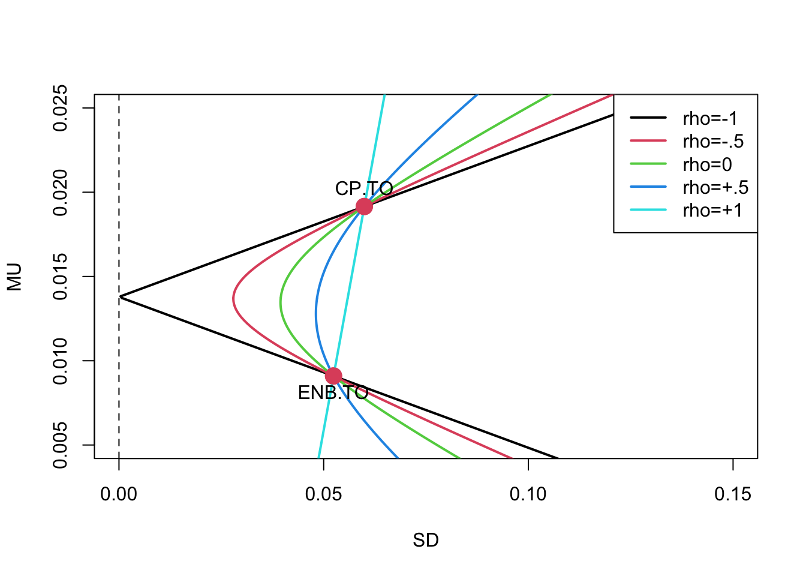
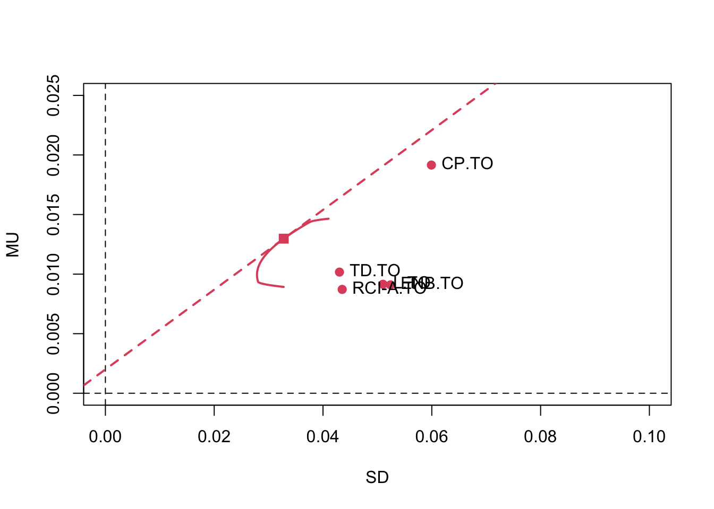

Chapter 19 Problem Set 4
Q1-Q3 are from the SDAFE textbook, 16.11 Q4-Qsmth are from 16.10
19.1 Q1.1
Suppose that there are two risky assets, A and B, with expected returns equal to 2.3% and 4.5%, respectively. Suppose that the standard deviations of the returns are \(\sqrt{ 6 }\%\) and \(\sqrt{ 11 }\%\) and that the returns on the assets have a correlation of 0.17.
19.1.1 Part A
What portfolio of A and B achieves a 3 % rate of expected return?
\[ \begin{aligned} \mathbb{E}(wA+ (1-w)B) &= 0.03\\ &= w\mathbb{E}(A) + (1-w)\mathbb{E}(B)\\ &= w\cdot .023 + (1-w)\cdot.045\\ 0.03 &= w(.023-.045) + .045\\ w &= \frac{.03-.045}{.023-.045}\\ w &= 0.6818 \end{aligned} \]
A portfolio made up of \(68\%\) of asset A and \(32\%\) of asset B will achieve a \(3\%\) rate of expected return.
19.1.2 Part B
What portfolios of A and B achieve a 5.5% standard deviation of return? Among these, which has the largest expected return? \[ \begin{aligned} \mathbb{V}(R_{p}) &= \mathbb{V}(wA + (1-w)B)\\ &= w^{2}\mathbb{V}(A) + (1-w)^{2}\mathbb{V}(B) + 2\cdot w(1-w)Cov(A,B)\\ &= w^{2}0.06 + (1-w)^{2}0.11 + w(1-w) 2\cdot0.17\cdot \sqrt{ 0.06 \cdot 0.11}\\ &= w^{2}0.06 + (1-2w+w^{2})0.11 + (w-w^{2}) 2\cdot 0.17\cdot \sqrt{ 0.06 \cdot 0.11}\\ &= w^{2}(6 + 11 - 2.7621) + w(2.7621 -2\cdot 11) + 11\\ 0.055^{2} &= 14.2379w^{2} -19.2379 w + 11\\ 0 &= 14.2379w^{2} -19.2379 w + 11 - 5.5\\ w &= 0.4108 \text{ and } 0.9404 \end{aligned} \]
As the portfolio with weight 41% in A will give asset B more weight, and because asset B has a higher expected return, this portfolio will have the largest expected return.
19.2 Q1.2
Suppose there are two risky assets, C and D, the tangency portfolio is 65% C and 35% D, and the expected return and standard deviation of the return on the tangency portfolio are 5% and 7%, respectively. Suppose also that the risk-free rate of return is 1.5%. If you want the standard deviation of your return to be 5%, what proportions of your capital should be in the risk-free asset, asset C, and asset D?
\[ \begin{aligned} \text{Let } w_{f} &= \text{weight of risk-free asset}\\ \mathbb{V}(R_{p}) &= \mathbb{V}(\underbrace{ w_{f}r_{f} }_{ 0 } + (1-w_{f})r_{tangency})\\ 5^{2}\% &= (1-w_{f})^{2}\cdot 7\%^{2}\\ \frac{5\%}{7\%} &= 1-w_{f}\\ 0.7142 &= 1-w_{f}\\ \implies w_{c} &= .7142\cdot .65 = 0.4642\\ w_{d} &= .7142\cdot .35 = 0.25\\ w_{f} &= 0.2857\\ \end{aligned} \]
But the solutions states: 2/7 = 0.2857 in risk-free, 0.4643 in C, and 0.2500 in D
I have no idea how. Can’t spot my mistake : I’m an idiot, remember to square std dev to get variance and double check your work 🥴
19.3 Q1.3
19.3.1 Part A
Suppose that stock A shares sell at $75 and stock B shares at $115. A portfolio has 300 shares of stock A and 100 of stock B. What are the weights w and 1−w of stocks A and B in this portfolio?
\[ \begin{aligned} w &= \frac{75\cdot 300}{75\cdot 300 + 115 \cdot 100} = 0.66176\\ \\ 1-w &= 0.33824 \end{aligned} \]
19.3.2 Part B
More generally, if a portfolio has \(N\) stocks, if the price per share of the \(j\)th stock is \(P_j\), and if the portfolio has \(n_j\) shares of stock \(j\), then find a formula for \(w_j\) as a function of \(n_{1},\dots,n_{N}\) and \(P_{1},\dots,P_{N}\).
\[ \begin{aligned} w_{j} = \frac{n_{j}\cdot P_{j}}{\sum^{N}_{i=1}n_{i}P_{i}} \end{aligned} \]
19.4 Q1.4
Let \(R_{P}\) be a return of some type on a portfolio and let \(R_{1},\dots, R_{N}\) be the same type of returns on the assets in this portfolio. Is \(R_P = w_{1}R_{1}+ \dots + w_{N}R_{N}\) true if \(R_{P}\) is a net return? Is this equation true if \(R_{P}\) is a gross return? Is it true if \(R_{P}\) is a log return? Justify your answers.
\[ \begin{aligned} \text{Gross Returns:}&\\ R'(t) &= \frac{S(t)}{S(t-1)}\\ \text{Net Returns:}&\\ R(t) &= R'(t)-1 = \frac{S(t)-S(t-1)}{S(t-1)}\\ \text{Log Returns:}&\\ r(t) &= \log(R'(t)) = \log\{S(t)\}-\log\{S(t-1)\}\\ \end{aligned} \]
We have shown in class that this equation holds for net returns. For gross returns: \[ \begin{aligned} R'(t) = R(t)+1 &= w_{1}R_{1}(t) + \dots + w_{N}R_{N}(t) + 1\\ &= w_{1}R_{1}(t) + \dots + w_{N}R_{N}(t) + (w_{1}+\dots+w_{N})\\ &= w_{1}(R_{1}(t)+1) + \dots + w_{N}(R_{N}(t)+1)\\ &= w_{1}R'_{1}(t) + \dots + w_{N}R'_{N}(t) \end{aligned} \]
So it holds for gross returns as well.
\[ \begin{aligned} r(t) &= \log(R'(t)) = \log(w_{1}R'_{1}(t) + \dots + w_{N}R'_{N}(t))\\ &= \log(w_{1}R'_{1}(t)) \times \dots \times \log(w_{N}R'_{N}(t))\\ &= [\log(w_{1}) + \log(R'_{1}(t))] \times \dots \times [\log(w_{N}) + \log(R'_{N}(t))]\\ &= [\log(w_{1}) + r_{1}(t)] \times \dots \times [\log(w_{N}) + \log(r_{N}(t))]\\ &\ne w_{1}r_{1}(t) + \dots + w_{N}R_{N}(t) \end{aligned} \]
So it does not hold for log returns.
The following is from 16.10 1-3
19.5 Q2.1
Write an R program to find the efficient frontier, the tangency portfolio, and the minimum variance portfolio, and plot on “reward-risk space” the location of each of the six stocks, the efficient frontier, the tangency portfolio, and the line of efficient portfolios. Use the constraints that −0.1 ≤ wj ≤ 0.5 for each stock. The first constraint limits short sales but does not rule them out completely. The second constraint prohibits more than 50 % of the investment in any single stock. Assume that the annual risk-free rate is 3 % and convert this to a daily rate by dividing by 365, since interest is earned on trading as well as nontrading days.
Taken straight from the answer key
library(readr)
dat = read.csv("ProblemSets/datasets/Stock_Bond.csv", header = T)
prices = cbind(dat$GM_AC, dat$F_AC, dat$CAT_AC, dat$UTX_AC,
dat$MRK_AC, dat$IBM_AC)
n = dim(prices)[1]
returns = 100 * (prices[2:n, ] / prices[1:(n-1), ] - 1)
pairs(returns)
M = length(mean_vect)
library(quadprog)
Amat = cbind(rep(1,M),mean_vect,diag(1,nrow=M),-diag(1,nrow=M))
muP = seq(min(mean_vect)+.02,max(mean_vect)-.02,length=10)
muP = seq(.05,0.08,length=300)
sdP = muP
weights = matrix(0,nrow=300,ncol=M)
for (i in 1:length(muP))
{
result =
solve.QP(Dmat=cov_mat,dvec=rep(0,M), Amat=Amat,
c(1,muP[i],rep(-.1,M),rep(-.5,M)), meq=2)
sdP[i] = sqrt(2*result$value)
weights[i,] = result$solution
}
plot(sdP,muP,type="l",xlim=c(0,2.5),ylim=c(0,.1))
mufree = 3/365
points(0,mufree,cex=3,col="blue",pch="*")
sharpe =( muP-mufree)/sdP
ind = (sharpe == max(sharpe)) # locates the tangency portfolio
weights[ind,] # weights of the tangency portfolio## [1] -0.091181044 -0.002910879 0.335318542 0.383714329 0.319484849
## [6] 0.055574204lines(c(0,sdP[ind]),c(mufree,muP[ind]),col="red",lwd=3)
points(sdP[ind],muP[ind],col="blue",cex=3,pch="*")
ind2 = (sdP == min(sdP))
points(sdP[ind2],muP[ind2],col="green",cex=3,pch="*")
ind3 = (muP > muP[ind2])
lines(sdP[ind3],muP[ind3],type="l",xlim=c(0,.25),
ylim=c(0,.3),col="cyan",lwd=3)
text(sd_vect[1],mean_vect[1],"GM")
text(sd_vect[2],mean_vect[2],"F")
text(sd_vect[3],mean_vect[3],"UTX")
text(sd_vect[4],mean_vect[4],"CAT")
text(sd_vect[5],mean_vect[5],"MRK")
text(sd_vect[6],mean_vect[6],"IBM")
legend("topleft",c("efficient frontier","efficient portfolios",
"tangency portfolio","min var portfolio"),
lty=c(1,1,NA,NA),
lwd=c(3,3,1,1),
pch=c("","","*","*"),
col=c("cyan","red","blue","green"),
pt.cex=c(1,1,3,3)
)
19.6 Q2.2
If an investor wants an efficient portfolio with an expected daily return of 0.07%, how should the investor allocate his or her capital to the six stocks and to the risk-free asset? Assume that the investor wishes to use the tangency portfolio computed with the constraints \(−0.1 \leq w_j \leq 0.5\), not the unconstrained tangency portfolio.
options(digits=3)
# it divides by the risk free rate converted to daily but theres a typo,
# should be 3/365 (unless this is the amt of trading days, but that would be 252)
# omega = (.07 - muP[ind]) / (3/265 - muP[ind])
omega = (.07 - muP[ind]) / (3/365 - muP[ind])
omega## [1] 0.0518## [1] 0.948## [1] -0.08645 -0.00276 0.31794 0.36382 0.30292 0.05269## [1] 119.7 Q2.3
Does this data set include Black Monday?
Again, straight from the answer key.
Yes, Black Monday was October 19, 1987 and data go from January 2, 1987 to Sept 1, 2006. Black Monday is the 202th day in the original data set or the 201st day of returns. If you look in the spread sheet you will see huge price declines that day. The returns that day were:
returns[201,]
[1] -21.0 -18.2 -21.7 -15.7 -13.0 -23.519.8 Q3
From answer key:
library(tseries)
library(zoo)
tickers = c("ENB.TO","CP.TO","RCI-A.TO","TD.TO","L.TO")
N = length(tickers)
P=vector("list", N) # list for holding prices
for (i in 1:N) {
cat("Downloading ", i, " out of ", N , "\n")
P[[i]] = get.hist.quote(instrument = tickers[i],
start = as.Date("2010-01-01"),
end=as.Date("2020-12-01"),
compression="m", quote = "AdjClose",
retclass = "zoo", quiet = T)
}## Downloading 1 out of 5
## Downloading 2 out of 5
## Downloading 3 out of 5
## Downloading 4 out of 5
## Downloading 5 out of 5# net returns
R = sapply(P, FUN=function(x){ as.numeric(diff(x) / stats::lag(x, -1)) } )
colnames(R) = tickers # assign names19.8.1 Part A
Use only the first two stocks (ENB.TO and CP.TO), and calculate the sample means and (individual) sample variances of their returns. Consider the following hypothetical values for their correlation : \(\rho\) = −1, −0.5, 0, +0.5, +1. For each value of \(\rho\), calculate their corresponding 2D variance-covariance matrix and plot the risk-return profiles of portfolios combining the two assets with weights [w, (1 − w)], \(\forall w \in [−1, 2]\). Plot all profile curves on the same (\(\mu_p, \sigma_p\))-space, using a different color for each value of \(\rho\).
R2=R[,1:2]
MU = colMeans(R2)
SD = sqrt(diag(var(R2)))
par(mfrow=c(1,1), mar=c(5, 4, 4, 2) + 0.1)
plot(SD,MU,pch=16,cex=2, col=2, xlim=c(0,.15), ylim=c(0.005,.025))
abline(v=0, lty=2); abline(h=0, lty=2)
w = seq(-2,+3,.01); W = cbind(w, 1-w) # weights
MU.p = W %*% MU # portfolio means
rho=c(-1, -.5, 0, .5, 1) # correlations
for(i in 1:5){
COR=matrix(c(1,rho[i],rho[i],1),2,2)
COV= COR * (SD%*%t(SD))
SD.p = sqrt(rowSums((W %*% COV)*W)) # portfolio st.dev.
lines(SD.p, MU.p, type='l', lwd=2, col=i);
}
points(SD,MU,pch=16,cex=2, col=2)
text(SD, MU, pch=16, colnames(R2), pos=c(1,3))
legend('topright', lwd=rep(2,5),col=1:5,
c("rho=-1","rho=-.5","rho=0","rho=+.5","rho=+1") )
19.8.2 Part B
Consider all 5 stocks together now, and use the sample mean and sample variance-covariance matrix of their returns. Plot the efficient frontier and the capital market line on the same (\(\mu_p,\sigma_p\))-space and report the tangency portfolio weights. (Hint: adapt the code from Example 16.6 on p. 476 of SDAFE.)
library(quadprog)
COV=cov(R)
MU=colMeans(R)
SD=sqrt(diag(COV))
N=dim(R)[2]
plot(SD, MU, pch=16, cex=1.2, col= 2, xlim=c(0,.1), ylim=c(0,.025))
abline(v=0, lty=2); abline(h=0, lty=2)
text(SD, MU, tickers, cex=1, pos=4)
Amat = cbind(rep(1,N),MU)
mu.p = seq( -.005, .05,length=100)
sd.p = mu.p;
for (i in 1:length(mu.p))
{
bvec=c(1,mu.p[i])
out=solve.QP(Dmat=2*COV,dvec=rep(0,N),Amat=Amat,bvec=bvec,meq=2)
sd.p[i] = sqrt(out$value)
}
lines(sd.p,mu.p,type="l", lwd=2, col=2) # plot least variance portfolios
mu.f = .002 # monthly risk-free interest rate
COV.i=solve(COV)
W.tang=COV.i%*%(MU-mu.f) / sum( COV.i%*%(MU-mu.f) )
mu.tang=sum(W.tang*MU)
sd.tang=sqrt(sum( (COV %*% W.tang) * W.tang ) )
points( sd.tang, mu.tang, pch=15, cex=1.3, col=2)
sharpe=(mu.tang-mu.f)/sd.tang
abline(mu.f,sharpe,lwd=2,lty=2,col=2)
The Sharpe ratio is 0.335, and the tangency portfolio weights are:
## ENB.TO CP.TO RCI-A.TO TD.TO L.TO
## [1,] 0.135 0.362 0.106 0.248 0.14919.8.3 Part C
Repeat the previous part b. (i.e. plot the efficient frontier and capital market line, and report the tangency portfolio weights) with the restriction that all weights are within the bounds \(0 \le w_i \le 0.5,\;\; \forall i = 1, \ldots, 5\). (Hint: adapt the code from Example 16.7 on p. 479 of SDAFE.)
plot(SD, MU, pch=16, cex=1.2, col= 2, xlim=c(0,.1), ylim=c(.0,.025))
abline(v=0, lty=2); abline(h=0, lty=2)
text(SD, MU, tickers, cex=1, pos=4)
Amat = cbind(rep(1,N),MU,diag(1,nrow=N),-diag(1,nrow=N))
mu.pot = seq( min(MU), max(MU),length=300) # potential mean returns
mu.p = NULL # initialize portofio standard error
sd.p = NULL # initialize portofio standard error
W.p = NULL # initialize portofio weights
for (i in 1:length(mu.pot))
{
bvec=c(1,mu.pot[i],rep(0,N),rep(-0.5,N))
#check whether potential mean return can be achieved with given constraints
out=tryCatch( solve.QP(Dmat=2*COV,dvec=rep(0,N),Amat=Amat,bvec=bvec,meq=2), error=function(e) NULL)
#if mean return is achievable, save its st.dev. & portfolio weights
if(!is.null(out)){ # if
mu.p=c(mu.p, mu.pot[i])
sd.p=c(sd.p, sqrt(out$value))
W.p=rbind(W.p, out$solution)
}
}
lines(sd.p,mu.p,type="l", lwd=2, col=2) # plot least variance portfolios
colnames(W.p)=tickers
sharpe=( mu.p-mu.f)/sd.p
ind.tang=which.max(sharpe)
W.tang=W.p[ind.tang,]
sd.tang = sd.p[ind.tang]
mu.tang = mu.p[ind.tang]
points( sd.tang, mu.tang, pch=15, cex=1.3, col=2)
abline( c(mu.f, sharpe[ind.tang]),lwd=2, col=2, lty=2)
The set of feasible portfolios will be a subset of that of the unconstrained problem. Note that the constrained efficient frontier is not a parabola any more. But the constrained tangency portfolio is the same as the unconstrained one (since the since the unconstrained tangency portfolio weights were all within [0,.5]), and have (approximately) the same Sharpe ratio 0.335.
Note that the constrained tangency portfolio weights are (approximately) the same as the unconstrained ones:
## ENB.TO CP.TO RCI-A.TO TD.TO L.TO
## 0.135 0.362 0.106 0.248 0.149